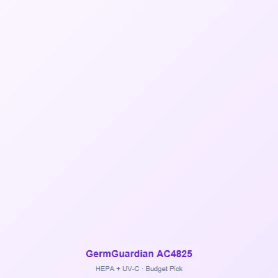

🔒 Editor's Note: Prices & availability updated daily. We research and compare products independently. As an Amazon Associate, we earn from qualifying purchases.
Best Air Purifier for a Small Bedroom (2026)
By Digital & Gear Editorial Team · Updated August 2026
Independent research · AHAM & manufacturer data · Updated August 2026
Under 200 sq ft · Right-Sized, Not Overbought
Small bedrooms — kids' rooms, guest rooms, dorms, city bedrooms under 200 sq ft — are the easiest rooms to keep genuinely clean, and the easiest to overbuy for. A big-room unit on its lowest setting still costs more and hums louder than the space needs. Here's the right-sized shortlist, sized by the AHAM two-thirds rule.
The Right-Sized Shortlist

LEVOIT Core 300
Best Overall · to ~210 sq ft
- CADR ~141, 24dB sleep mode
- ~8.7-inch footprint fits nightstands
- Cheapest genuine filters in class
Check Price on Amazon

GermGuardian AC4825
Slim Tower · to ~160 sq ft
- True HEPA + carbon in a 9-inch-wide tower
- Fits corners and desks no box unit can
- Long-running budget favorite ~$80-$100
Check Price on Amazon

LEVOIT Vital 200S
Small Rooms with Pets
- Pet mode cycles for dander and litter dust
- Washable pre-filter catches pet hair
- Auto mode + app scheduling for nap times
Check Price on Amazon
If the "small" room is really 250-360 sq ft, you've outgrown this list — see the full bedroom guide. Sharing one room with the kitchen? That's a studio apartment problem, not a small-bedroom one.
Why Overbuying a Small Room Backfires
- • Noise floor: big units' lowest speeds (30-35dB) are small units' highest. In a 140 sq ft room you'll hear it all night.
- • Floor tax: small bedrooms can't spare 2 sq ft to a tower that's twice as big as needed.
- • Filter math: large-room cartridges cost $40-$90 per swap versus $20-$25 for bedroom-class filters.
Placement in Tight Rooms
Keep 6+ inches of clearance around intake and outlet; a nightstand or dresser top works for the Core 300 and AC4825 as long as lamps and books don't block airflow. Point the outlet across the room rather than at the bed, and keep it 3+ feet from your pillow — the same rules we apply in nurseries and for light sleepers.